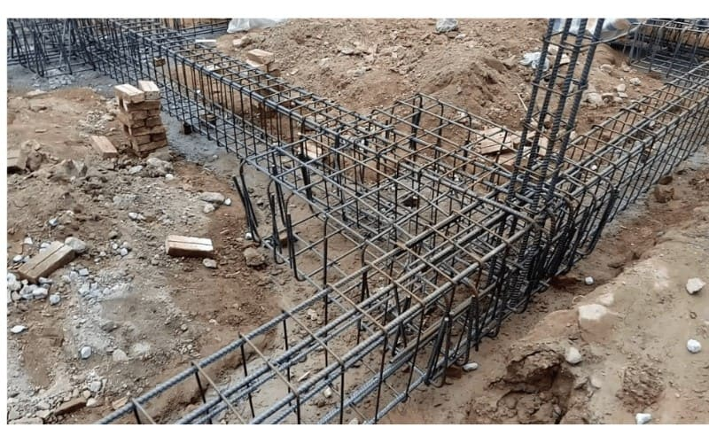
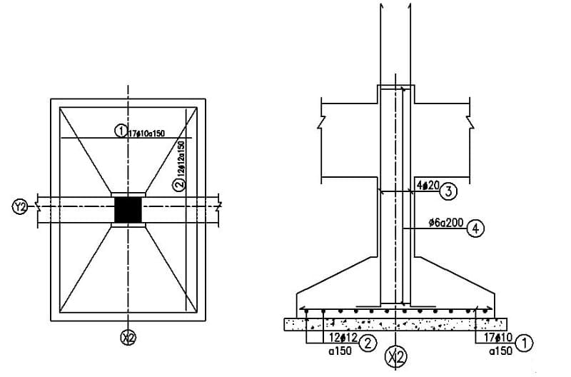
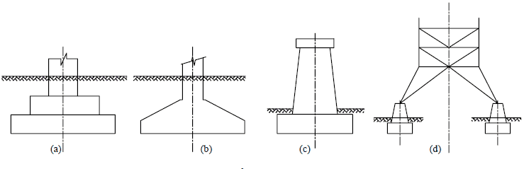

Móng đơn là gì và vì sao loại móng này thường được sử dụng trong nhiều công trình nhà ở? Đây là một trong những loại móng phổ biến nhờ kết cấu đơn giản, chi phí hợp lý và khả năng chịu lực tốt. Hãy cùng AVA Architects khám phá chi tiết về móng đơn, cấu tạo và ứng dụng của loại móng này trong bài viết dưới đây.
Xem thêm:
- Dầm là gì?
- Móng băng là gì?
- Lô gia là gì? Sự khác nhau giữa lô gia và ban công
Móng đơn là gì?
Móng đơn, còn được gọi là móng cốc, là loại móng có kết cấu đỡ một cột hoặc một cụm cột bố trí gần nhau. Đây là dạng móng khá phổ biến trong các công trình dân dụng quy mô nhỏ như nhà cấp 4, nhà phố nhờ cấu tạo đơn giản và thi công thuận tiện. Móng đơn thường được làm từ bê tông cốt thép, đặt trực tiếp trên nền đất tự nhiên hoặc trên nền đất đã được xử lý, gia cố bằng các phương pháp như đầm chặt hoặc ép cọc để tăng khả năng chịu lực.

Móng đơn là loại móng đỡ một cột, thường dùng cho nhà ở tải trọng nhỏ (C: Internet)
Trong hệ thống móng của công trình xây dựng, móng đơn được đánh giá là giải pháp tiết kiệm chi phí và dễ triển khai thi công. Tuy nhiên, trước khi lựa chọn loại móng này, gia chủ cần xem xét kỹ điều kiện địa chất, độ ổn định của nền đất cũng như tải trọng của công trình để đảm bảo độ bền vững lâu dài.
Ưu và nhược điểm của móng đơn
Ưu điểm
- Kết cấu gọn nhẹ, thi công thuận tiện: Móng đơn chủ yếu gồm một khối bê tông cốt thép nên quá trình xây dựng khá nhanh, giúp tiết kiệm chi phí và thời gian.
- Phù hợp với công trình tải trọng thấp: Thường được áp dụng cho nhà ở dân dụng, nhà kho hoặc các nhà xưởng có quy mô và số tầng không quá lớn.
- Thích hợp với địa hình đơn giản: Loại móng này thường sử dụng ở khu vực có nền đất bằng phẳng hoặc chỉ có độ dốc nhẹ.
- Không ảnh hưởng đến kết cấu phía trên: Móng được bố trí bên dưới nền đất nên không gây tác động đến hệ kết cấu hay không gian của công trình phía trên.

Móng đơn có ưu điểm kết cấu đơn giản, thi công nhanh và tiết kiệm chi phí xây dựng (C: Internet)
Nhược điểm
- Khả năng chịu tải hạn chế: Móng đơn không thích hợp cho các công trình quy mô lớn như nhà cao tầng, cầu vượt hoặc những công trình có tải trọng lớn.
- Nguy cơ lún khi nền đất yếu: Nếu xây dựng trên nền đất không ổn định, móng đơn dễ xảy ra hiện tượng lún, gây ảnh hưởng đến độ bền và kết cấu của công trình.
- Không phù hợp với địa hình phức tạp: Loại móng này ít được sử dụng ở những khu vực như đồi núi, bãi cát ven biển hoặc nền đất đá; trong các trường hợp này thường cần áp dụng móng cọc để đảm bảo an toàn.
Xem thêm:
Cấu tạo chi tiết của móng đơn
Kết cấu của móng đơn thường gồm lớp bê tông lót ở phía dưới, phần thân móng và hệ thống cốt thép được bố trí theo nguyên tắc phân bố lực hợp lý. Việc sắp xếp cốt thép trong móng giúp tăng khả năng chịu lực nén, đồng thời hạn chế tình trạng nứt hoặc hư hỏng trong quá trình sử dụng công trình.
Nhìn chung, cấu tạo móng đơn khá đơn giản và thường bao gồm 4 bộ phận cơ bản sau:
Bản móng (Đế móng)
Bản móng thường có đáy dạng hình chữ nhật và được thiết kế vát dốc với tỷ lệ phù hợp để tăng khả năng phân bố tải trọng. Khi thiết kế móng đơn, kỹ sư cần tính toán và điều chỉnh kích thước bản móng sao cho phù hợp với quy mô cũng như đặc điểm chịu lực của công trình.
Giằng móng
Giằng móng, còn được gọi là đà kiểng, là bộ phận có chức năng liên kết các móng với nhau, giúp đỡ tường xây phía trên và hạn chế tình trạng lún lệch giữa các vị trí móng trong toàn bộ công trình.

Móng đơn có cấu tạo gồm bê tông lót, bản móng, cổ móng và hệ cốt thép chịu lực (C: Internet)
Cổ móng
Cổ móng thường có kích thước tương đương với cột ở tầng trệt, nhưng được bọc thêm một lớp bê tông bên ngoài nhằm bảo vệ hệ cốt thép bên trong, giúp tăng độ bền và hạn chế tác động từ môi trường.
Lớp bê tông lót
Lớp bê tông lót thường được tạo từ hỗn hợp xi măng trộn với đá nhỏ hoặc gạch vỡ, có tác dụng làm phẳng và vệ sinh đáy hố móng. Đồng thời, lớp này còn giúp hạn chế tình trạng xi măng bị mất nước trong quá trình thi công móng.
Xem thêm:
- BIM là gì? Lợi ích, lịch sử và ứng dụng BIM trong xây dựng
- Quy định PCCC căn hộ 3 tầng, 4 tầng, 5 tầng, 6 tầng, 7 tầng
- Có nên xây tường gạch 2 lớp chống nóng không?
Phân loại móng đơn
Móng đơn có thể được phân loại theo nhiều tiêu chí khác nhau như độ cứng của móng, mức tải trọng chịu lực, phương pháp chế tạo cũng như vật liệu sử dụng.
Phân loại theo độ cứng
- Móng đơn mềm: Loại móng này có khả năng biến dạng theo sự dịch chuyển của nền đất, đồng thời chịu uốn khá tốt.
- Móng đơn cứng vừa (móng đơn hữu hạn): Đây là dạng móng có độ cứng ở mức trung bình, trong đó tỷ lệ giữa cạnh dài và cạnh ngắn của móng thường từ 8 trở lên.
- Móng đơn cứng: Là loại móng có độ cứng cao, kết cấu vững chắc và gần như không xảy ra hiện tượng biến dạng trong quá trình chịu tải.
Phân loại theo tải trọng
- Móng chịu tải trọng lệch tâm: Đây là loại móng đơn phải chịu lực tác động không trùng với trục đối xứng của móng. Trường hợp này thường xuất hiện ở các cột đặt gần tường rào hoặc vị trí đặc biệt, vì vậy việc thiết kế cần được tính toán cẩn thận để tránh hiện tượng lật móng hoặc lún lệch.
- Móng chịu tải trọng đúng tâm: Là loại móng đơn mà lực tác động trùng với trục đối xứng của móng, giúp áp lực phân bố đều xuống nền đất. Đây là dạng móng phổ biến, thường được sử dụng cho các cột độc lập trong nhiều công trình xây dựng.
- Móng cho công trình cao: Được áp dụng cho các công trình có chiều cao lớn như ống khói, tháp nước,… nhằm đảm bảo khả năng chịu lực và ổn định kết cấu.
- Móng chịu lực ngang lớn: Thường dùng trong các công trình như tường chắn, nơi móng phải chịu tác động mạnh theo phương ngang.
- Móng chịu tải trọng thẳng đứng: Loại móng được thiết kế chủ yếu để tiếp nhận và truyền tải lực theo phương thẳng đứng từ công trình xuống nền đất.
Móng đơn được phân loại dựa trên độ cứng, tải trọng, phương thức thi công và vật liệu sử dụng (C: Internet)
Phân loại theo phương thức chế tạo
- Móng lắp ghép: Là loại móng được tạo thành từ nhiều cấu kiện hoặc khối vật liệu được sản xuất sẵn, sau đó vận chuyển đến công trình và lắp ghép lại trong quá trình thi công.
- Móng toàn khối: Là loại móng được thi công trực tiếp tại công trường bằng cách đổ bê tông tại chỗ, tạo thành một khối liên kết chắc chắn cho công trình.
Phân loại theo chất liệu
- Móng cừ tràm: Đây là loại móng sử dụng các cọc cừ tràm đóng xuống nền đất để tăng khả năng chịu lực cho công trình. Trước khi thi công, nền đất thường cần được xử lý và gia cố để đảm bảo độ ổn định.
- Móng đơn thép: Loại móng này được cấu thành từ hệ thống thép gia công sẵn tại nhà máy hoặc trực tiếp tại công trường. Trong quá trình thi công, cần đảm bảo bề mặt thép sạch, không dính bùn đất hay dầu mỡ để đảm bảo chất lượng liên kết với bê tông.
Tiêu chuẩn về kích thước móng đơn
Kích thước của móng đơn không có một tiêu chuẩn cố định mà sẽ được tính toán dựa trên nhiều yếu tố như tải trọng của công trình, đặc điểm nền đất và độ sâu đặt móng. Với các công trình nhà cấp 4, móng đơn thường có kích thước khoảng 1m x 1m đến 1.5m x 1.5m, sử dụng thép móng phi 12-16 để đảm bảo khả năng chịu lực.
Đối với nhà từ 2-3 tầng, kích thước móng đơn thường được thiết kế lớn hơn, khoảng 1.8m x 1.8m đến 2m x 2m, kết hợp với thép phi 18-20 nhằm tăng độ bền và khả năng chịu tải cho công trình.
Xem thêm:
- Nên chọn bê tông tươi và bê tông tự trộn
- Quy trình đổ sàn bê tông đúng kỹ thuật, an toàn
- Hồ sơ thiết kế là gì? Gồm những tài liệu nào?
Quy trình thi công móng đơn đúng tiêu chuẩn
Bước 1: Đóng cọc vào hố móng
Trước khi bắt đầu thi công móng đơn, cần xác định chính xác vị trí đóng cọc, kích thước cũng như khoảng cách giữa các cọc để đảm bảo độ chuẩn xác cho toàn bộ kết cấu móng. Với những khu vực có nền đất yếu, nên tiến hành gia cố thêm bằng cọc tre hoặc cừ tràm nhằm tăng độ ổn định cho nền móng. Sau đó, sử dụng máy đào hoặc xe cuốc để đóng cọc sâu xuống nền đất và tiến hành đào hố móng theo đúng thiết kế.
Bước 2: Đổ bê tông lót
Ở giai đoạn này, đội thi công sẽ tiến hành san phẳng đáy hố móng trước khi đổ một lớp bê tông lót bên dưới. Lớp bê tông lót thường có độ dày khoảng 100mm, giúp hạn chế tình trạng vữa và bê tông bị mất nước trong quá trình thi công. Đồng thời, lớp bê tông này còn có tác dụng tạo bề mặt phẳng và ổn định cho đáy móng trước khi thực hiện các bước tiếp theo.
Bước 3: Chuẩn bị cốt thép
Công đoạn chuẩn bị cốt thép cho móng đơn yêu cầu độ chính xác cao để đảm bảo khả năng chịu lực của công trình. Các thanh thép sẽ được cắt, uốn và buộc theo đúng bản vẽ thiết kế, đồng thời phải đảm bảo đúng vị trí và khoảng cách tiêu chuẩn giữa các thanh thép. Ngoài ra, tại các đầu thép chờ nên bọc thêm túi nilon để bảo vệ, tránh bám bẩn và hạn chế ảnh hưởng từ môi trường trong quá trình thi công.

Quy trình thi công móng đơn gồm các bước đào hố móng, đổ bê tông lót, lắp cốt thép và đổ bê tông móng (C: Internet)
Bước 4: Đổ bê tông cho móng
Trong giai đoạn này, thợ thi công sẽ trộn cát, xi măng và nước theo đúng tỷ lệ tiêu chuẩn để tạo thành hỗn hợp bê tông. Sau đó, bê tông được đổ vào các vị trí móng theo nguyên tắc “đổ từ xa đến gần” nhằm đảm bảo quá trình thi công thuận lợi và kết cấu móng được ổn định.
Khi tiến hành đổ bê tông móng đơn, cần thực hiện đầm bê tông kỹ lưỡng để tránh hiện tượng rỗ và giúp bê tông đạt cường độ chịu lực tốt. Trước khi đổ, phải kiểm tra cẩn thận hệ thống cốt thép, cốp pha và lớp bê tông lót để đảm bảo đúng theo bản vẽ thiết kế. Sau khi hoàn tất, bê tông cần được bảo dưỡng bằng cách giữ ẩm tối thiểu 7 ngày để tăng độ bền và chất lượng cho móng công trình.
Lưu ý khi thi công móng đơn cần biết
Dưới đây là một số lưu ý quan trọng khi thi công móng đơn để đảm bảo chất lượng và độ bền cho công trình:
- Khảo sát địa chất trước khi thi công: Gia chủ cần tiến hành khảo sát kỹ điều kiện địa chất, xác định rõ loại đất nền và mực nước ngầm. Việc này giúp lựa chọn loại móng đơn phù hợp và đảm bảo khả năng chịu lực cho công trình.
- Xác định chiều sâu chôn móng hợp lý: Chiều sâu đặt móng là yếu tố kỹ thuật quan trọng, phụ thuộc vào tải trọng công trình, đặc điểm đất nền và độ sâu của lớp đất tốt. Ở một số khu vực, yếu tố khí hậu cũng có thể ảnh hưởng đến độ sâu móng. Do đó, việc khảo sát địa chất sẽ giúp kỹ sư tính toán và đưa ra phương án chôn móng phù hợp.
- Kiểm tra giằng móng đúng thiết kế: Giằng móng có chức năng liên kết các móng với nhau, giúp tăng độ ổn định và hạn chế tình trạng lún lệch giữa các cột. Trước khi đổ bê tông, cần kiểm tra kỹ kích thước và vị trí giằng móng theo bản vẽ thiết kế.
- Lựa chọn vật liệu đạt tiêu chuẩn: Vật liệu sử dụng cho móng đơn cần đảm bảo chất lượng và khả năng chịu lực tốt. Đặc biệt, thép phải đúng chủng loại, đường kính và số lượng theo bản vẽ, đồng thời không bị gỉ sét để đảm bảo độ bền cho kết cấu móng.
- Thi công đúng kỹ thuật: Trong quá trình thi công, cần tuân thủ đúng quy trình và kỹ thuật xây dựng để tránh các sai sót có thể ảnh hưởng đến khả năng chịu lực và độ an toàn của móng.
- Bảo dưỡng bê tông sau khi đổ: Sau khi hoàn thành đổ bê tông móng, cần thực hiện bảo dưỡng đúng cách bằng cách giữ ẩm bề mặt bê tông trong thời gian cần thiết, giúp bê tông ninh kết tốt và đạt cường độ theo tiêu chuẩn.
Hy vọng qua bài viết trên, bạn đã hiểu rõ móng đơn là gì, cấu tạo cũng như những trường hợp nên áp dụng loại móng này trong xây dựng. Việc lựa chọn đúng loại móng không chỉ giúp công trình bền vững mà còn tối ưu chi phí và đảm bảo an toàn trong quá trình sử dụng. Nếu bạn cần tư vấn thiết kế, thi công nền móng hoặc giải pháp kiến trúc phù hợp cho ngôi nhà của mình, hãy liên hệ AVA Architects để được đội ngũ chuyên gia hỗ trợ chi tiết và chuyên nghiệp.
- Market Analyst
- Mỹ Vân là Chuyên viên Phân tích Thị trường, đảm nhận vai trò nghiên cứu và phân tích chuyên sâu các xu hướng của ngành kiến trúc, loại hình dự án và thị trường bất động sản cho AVA Architects. Vân đã và đang hỗ trợ AVA Architects liên tục đổi mới và đưa ra quyết định chiến lược chính xác, đồng thời cung cấp cho khách hàng những góc nhìn giá trị để đưa ra lựa chọn đầu tư hiệu quả nhất. Tất cả đều hướng tới mục tiêu củng cố vị thế tiên phong của AVA và cùng khách hàng kiến tạo nên những giá trị bền vững cho tương lai.
 Blog thiết kế AVA14/09/202699+ Mẫu biệt thự phố đẹp, hiện đại, xu hướng năm 2026
Blog thiết kế AVA14/09/202699+ Mẫu biệt thự phố đẹp, hiện đại, xu hướng năm 2026 Blog thiết kế AVA10/09/2026999+ mẫu biệt thự đẹp đẳng cấp, sang trọng nhất 2026
Blog thiết kế AVA10/09/2026999+ mẫu biệt thự đẹp đẳng cấp, sang trọng nhất 2026 Blog thiết kế AVA09/09/2026Mẫu biệt thự hiện đại sang trọng, hiện đại 2026
Blog thiết kế AVA09/09/2026Mẫu biệt thự hiện đại sang trọng, hiện đại 2026 Blog thi công AVA28/04/2026Lợi ích khi xây nhà trọn gói bạn nhất định phải biết
Blog thi công AVA28/04/2026Lợi ích khi xây nhà trọn gói bạn nhất định phải biết